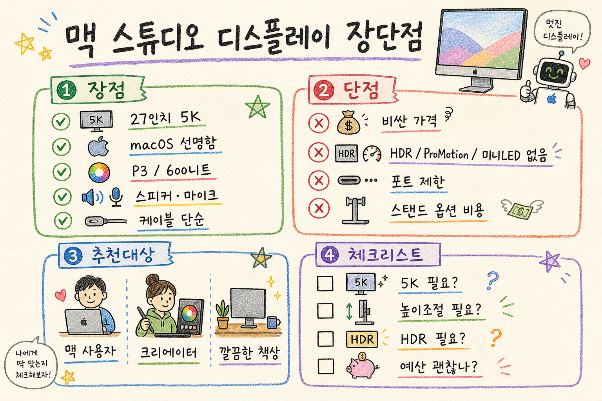

Apple Studio Display 장단점 분석

한 줄 결론
- 맥을 주력으로 쓰고 27인치 5K 선명도·색 정확도·책상 일체감을 오래 누릴 사람에게는 만족도가 높지만, 가격 대비 최신 디스플레이 기능을 따지면 냉정하게 비싼 모니터다.
핵심 스펙 요약
| 항목 | 공개 스펙 기준 요약 |
|---|---|
| 화면 | 27인치 5K Retina 디스플레이 |
| 해상도 | 5120×2880, 218ppi |
| 색/밝기 | Wide color P3, True Tone, 600니트 밝기 |
| 카메라 | 12MP Center Stage 카메라, Desk View 지원 |
| 오디오 | 스튜디오급 3마이크 어레이, 포스 캔슬링 우퍼 포함 6스피커 시스템, Spatial Audio 지원 |
| 연결 | Thunderbolt와 USB-C 기반 연결. 최신 Apple 공개 스펙은 Thunderbolt 5·USB-C 구성을 제시한다. 구매 전 판매 지역/모델의 포트 구성을 확인해야 한다. |
| 스탠드 | 기본 틸트 조절, 틸트+높이 조절 스탠드 옵션, VESA 마운트 옵션 |
| 유리 옵션 | 일반 글래스, Nano-texture glass 옵션 |
| 가격 | 미국 Apple Store 기준 기본형 $1,599부터. Nano-texture, 높이 조절 스탠드 선택 시 가격 상승 |
장점
1. 5K와 macOS 스케일링 궁합이 좋다
- 27인치 5K는 macOS에서 텍스트가 매우 선명하게 보이는 조합이다.
- 일반 27인치 4K 모니터보다 글자·아이콘·UI 경계가 자연스럽다.
- 문서 작업, 코딩, 사진 편집처럼 오래 보는 작업에서 체감 차이가 크다.
2. 색, 밝기, 일체감이 안정적이다
- P3 색역, True Tone, 600니트 밝기는 일반 업무와 사진·영상 보정 입문/중급 작업에 충분히 좋다.
- MacBook, Mac mini, Mac Studio와 색감·밝기·UI 느낌이 잘 맞는다.
- 별도 캘리브레이션을 깊게 하지 않아도 “애플 화면 느낌”을 바로 얻기 쉽다.
3. 스피커·마이크·카메라가 한 번에 정리된다
- 6스피커 시스템은 일반 모니터 내장 스피커보다 훨씬 낫다.
- 3마이크 어레이는 화상회의·녹음·음성 입력에서 별도 장비 부담을 줄인다.
- 12MP Center Stage 카메라는 화면 중앙 유지와 Desk View 같은 편의 기능이 있다.
4. 디자인과 빌드 품질이 좋다
- 알루미늄 하우징과 얇은 디자인은 Mac 책상 구성과 잘 어울린다.
- 전원, 디스플레이, 오디오, 카메라, USB 허브 역할이 한 제품에 묶인다.
- 케이블이 단순해져 책상 정리가 쉬워진다.
단점
1. 가격이 가장 큰 장벽이다
- 기본형도 프리미엄 가격대다.
- Nano-texture glass, 높이 조절 스탠드, VESA 옵션까지 고려하면 부담이 더 커진다.
- 비슷한 예산이면 더 큰 화면, 고주사율, HDR, OLED·미니LED 계열 모니터도 비교 대상이 된다.
2. HDR, ProMotion, 미니LED가 없다
- 600니트 SDR 중심 디스플레이다.
- 고급 HDR 영상 작업, 로컬 디밍, 깊은 명암비가 필요한 작업에는 한계가 있다.
- 120Hz ProMotion이 없어 스크롤·모션 부드러움은 고주사율 모니터보다 떨어진다.
3. 포트와 확장성은 제한적이다
- 모니터 자체가 전문 도킹스테이션급 확장성을 제공하는 제품은 아니다.
- HDMI, DisplayPort, Ethernet, SD 카드 같은 포트가 필요한 사용자는 별도 허브가 필요할 수 있다.
- 비맥 환경에서는 밝기·카메라·스피커·펌웨어 기능 활용이 제한될 수 있다.
4. 카메라 평가는 논란이 있었다
- Center Stage 자체는 편하지만, 출시 초기 웹캠 화질 평가는 기대보다 낮다는 반응이 많았다.
- 소프트웨어 업데이트로 개선된 부분이 있어도, 별도 고급 웹캠을 대체할지 여부는 사용 환경별로 확인이 필요하다.
5. 스탠드 옵션 비용이 아쉽다
- 높이 조절은 많은 업무 사용자에게 기본적인 인체공학 요소다.
- 그런데 높이 조절 스탠드는 별도 고가 옵션이다.
- 모니터 암을 쓸 생각이면 처음부터 VESA 모델을 검토해야 한다.
경쟁 대안 비교
| 대안 | 강점 | 약점 | 판단 포인트 |
|---|---|---|---|
| LG UltraFine 5K 계열 | 27인치 5K, Mac 친화성 | 디자인·스피커·빌드 체감은 Apple보다 약할 수 있음 | 5K가 핵심이고 가격을 낮추고 싶을 때 |
| BenQ 크리에이터 모니터 | 색 정확도, 다양한 크기·포트 | 5K macOS 선명도 조합은 제품별 차이 | 사진·영상 작업용 포트와 색 관리가 중요할 때 |
| Dell UltraSharp 계열 | 포트·허브·업무 기능, 선택지 다양 | macOS 5K Retina 감성은 제품별 차이 | 회사 업무, 멀티 입력, 도킹 기능이 중요할 때 |
| Apple Pro Display XDR | 6K, 고급 HDR, 전문가용 기준 | 가격이 Studio Display보다 훨씬 높음 | HDR·고급 영상 작업이 돈보다 중요할 때 |
| 일반 4K/5K2K/고주사율 모니터 | 가격·크기·주사율 선택 폭 | macOS 텍스트 선명도와 일체감은 약할 수 있음 | 게임·대화면·가성비가 우선일 때 |
추천 대상
- MacBook, Mac mini, Mac Studio를 주력으로 쓰는 사람.
- 텍스트 선명도와 macOS 스케일링 품질을 중요하게 보는 사람.
- 사진·디자인·콘텐츠 작업을 하지만 Pro Display XDR급 HDR까지는 필요 없는 사람.
- 책상 위 케이블, 스피커, 마이크, 웹캠을 한 번에 정리하고 싶은 사람.
- “오래 쓸 고급 Mac용 모니터”에 비용을 지불할 의향이 있는 사람.
비추천 대상
- 가격 대비 성능을 최우선으로 보는 사람.
- HDR 영상 편집, 미니LED/OLED 명암, 120Hz 이상 주사율이 꼭 필요한 사람.
- Windows PC, 게임 콘솔, 여러 입력 장치를 자주 연결하는 사람.
- HDMI·DisplayPort·Ethernet·KVM 같은 확장성을 모니터에서 해결하고 싶은 사람.
- 높이 조절 스탠드 비용까지 포함하면 예산이 부담되는 사람.
구매 전 체크리스트
- 5K Retina가 정말 필요한가? 문서·코딩·사진 작업이면 체감 가능성이 높다.
- HDR과 120Hz가 없어도 되는가? 영상·게임 비중이 높으면 대안을 봐야 한다.
- 높이 조절 스탠드가 필요한가? 필요하면 총구매가가 크게 오른다.
- 모니터 암을 쓸 것인가? 그렇다면 VESA 모델을 처음부터 확인한다.
- Windows나 콘솔도 연결할 것인가? 비맥 환경 활용성은 제한될 수 있다.
- 스피커·마이크·카메라 통합 가치가 있는가? 별도 장비가 이미 좋다면 장점이 줄어든다.
- Nano-texture가 필요한 환경인가? 밝은 창가·조명 반사가 심한 곳이 아니면 일반 글래스도 충분할 수 있다.
- 대안 모니터와 총비용을 비교했는가? 4K/5K/고주사율/HDR 제품을 함께 비교해야 후회가 적다.
비판적 관점
- Studio Display의 핵심 가치는 단순 스펙표보다 Mac 생태계 안에서의 완성도에 있다.
- 동시에 그 완성도에는 분명한 애플 프리미엄이 붙어 있다.
- 27인치 5K 선택지가 많지 않은 시장 구조도 가격 방어에 영향을 준다.
- 장기 사용가치는 높을 수 있지만, HDR·고주사율·확장성을 포기하는 비용까지 함께 계산해야 한다.
- 따라서 “가성비 모니터”가 아니라 “Mac용 고급 일체형 작업 모니터”로 봐야 판단이 정확하다.
최종 판단 프레임
| 질문 | 답이 YES면 |
|---|---|
| 매일 Mac에서 오래 텍스트와 이미지를 보는가? | Studio Display 장점이 커진다 |
| 27인치 5K 선명도가 최우선인가? | 강력한 후보 |
| HDR·120Hz·미니LED가 꼭 필요한가? | 다른 대안 우선 |
| 책상 정리와 내장 오디오·마이크·카메라가 중요한가? | 통합 가치가 커진다 |
| 가격 부담이 크거나 확장성이 중요한다? | Dell/BenQ/LG 등 대안 비교 권장 |
공개 출처
- Apple Studio Display 공식 페이지: https://www.apple.com/studio-display/
- Apple Studio Display 기술 사양: https://www.apple.com/studio-display/specs/
- Apple Store Studio Display 구매 페이지: https://www.apple.com/shop/buy-mac/apple-studio-display
- Apple Studio Display 사용자 가이드: https://support.apple.com/guide/studio-display/welcome/mac
- RTINGS Apple Studio Display 리뷰: https://www.rtings.com/monitor/reviews/apple/studio-display
면책
- 이 보고서는 공개 웹 자료 기반의 구매 판단 프레임이다.
- 가격, 포트 구성, 옵션, 판매 모델은 지역과 시점에 따라 달라질 수 있으므로 구매 직전 Apple 공식 판매 페이지에서 다시 확인해야 한다.